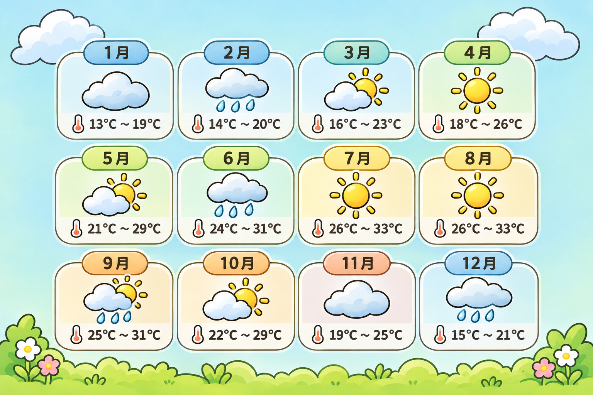

About jQuery & design application
本範例介紹 jQuery 的基本概念與網頁互動設計應用，透過漢堡選單（Hamburger Menu）與摺疊內容（Accordion）等常見介面元件，學習運用 jQuery 控制元素顯示、隱藏及互動效果，理解 JavaScript 與 HTML、CSS 之間的協作關係，並提升網頁的操作體驗與互動性。

Learning map
jQuery 階段不會只是三組長得一模一樣的內容，必須思考不同資訊的呈現方式。

When to use
1. 同一群內容的不同類別
2. 不同層次的資訊
3. 不同日期或階段